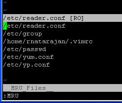
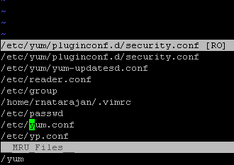

1. View the Most Recently Used Files in Vi / Vim Editor
:MRU
Note: :MRU (upper-case) works. :mru (lower-case) doesn't work.
:MRU will show “most recently used” files ordered by the recent usage from top to bottom as shown below. To open a file press ENTER while the cursor in that file name.

Fig: Vim Editor displaying "Recent Documents" List
Note: Immediately after installing the MRU plugin, you may not see any files in the MRU list. Use Vim editor to open few files after installing the plugin, for the MRU list to grow.
2. How to Increase MRU List Count? (Increase the Number of Files Stored)
By default MRU list stores only the last 10 used files. Add the following line to your ~/.vimrc to increase this limit as shown below.
$ cat ~/.vimrc
let MRU_Max_Entries = 20
3. How to Search Files Inside the MRU List
When you increased the number of files, it may be difficult to scroll through the MRU list to pick the file you are looking for. Instead, you can use the normal Vim commands to search inside the MRU list. So you can give (slash)/ and give a pattern to search.
In the following example, the MRU list was very long. I did a “/yum”, which moved the cursor automatically to /etc/yum.conf MRU entry. Pressing enter, will open this file.

Fig: Search the MRU List Using /
You can also use the MRU search functionality as explained below.
4. Opening Files from MRU List in a New Tab
Pressing enter on an MRU entry will open the file in the same window by default. It will open in new window if the file opened in the current window is not yet saved.
5. Update the MRU Window
To update the current MRU window, press ‘u’. When ever opening the MRU window it will open the newer content always.
6. Excluding Certain Files Using MRU_Exclude_Files
To exclude certain files from being shown in the MRU, you can store the regex in the MRU_Exclude_Files variable as:
$ cat ~/.vimrc
let MRU_Exclude_Files = '^/tmp/.*\|^/var/tmp/.*' " For Unix
The above will exclude the /tmp and /var/tmp from being stored in MRU.
7. Including Certain Files Using MRU_Include_Files
To include only certain kind of files in MRU, you can store the regex in the MRU_Include_Files variable as shown below. This will include only the files which are in /home/ramesh to be stored in MRU.
$ cat ~/.vimrc
let MRU_Include_Files = '^/home/ramesh/.*'
�